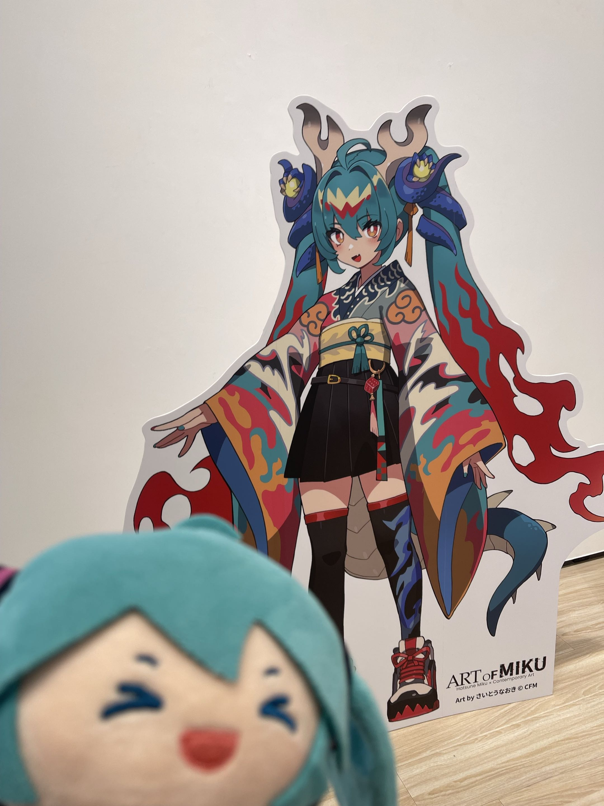

Hello
Welcome to my profile page
My name is KOZ,
a cyber pilot from R.O.C
Nice to meet you
Scroll

koz8738
年齡： 不詳
性別： 男性
生日： 7/2
主推： 星街
副推： 太多了，簡稱DD
興趣是：
- 聽歌（日文、中文、英文，最喜歡五月天）
- ACG相關的東西
- 玩模擬飛行（特別是空客系列）

海岸航空
職位： Second Officer
期間： 2026/8/26 至今
機型： A320 A321 A330 A350 B737max8
簡介：
- 飛行時數:42h
- 塗裝:B-32AH (A339) B-24BH (B737max8)

Polaris Airways
職位： 美術總監、學員
期間： 2027/1 至今
機型： A321
簡介：
尚未填寫